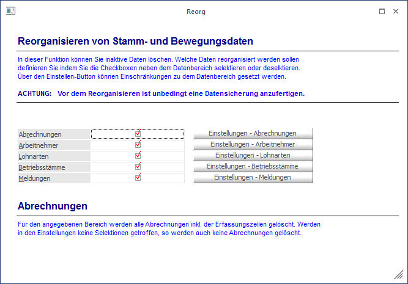

Über den Menüpunkt
1 Abschluss
1 Reorg
können Datenbereiche gelöscht werden, die über die "normale" Stammdatenpflege nicht entfernt werden können, weil vor dem Löschen geprüft werden muss, ob diese Daten noch benötigt werden.

Nach Anwahl des Menüpunktes wird eine Art Assistent geöffnet, der durch den Reorg der einzelnen Stammdaten führen soll.
Im ersten Schritt muss entschieden werden, welche Datenbereiche reorganisiert werden sollen. Dabei stehen die Bereiche
ü Abrechnungen
ü Arbeitnehmer
ü Lohnarten
ü Betriebsstämme
ü Meldungen
zur Verfügung. Durch Anklicken der jeweiligen Checkbox wird der Bereich zum Reorg selektiert. Bei allen 5 Datenbereichen gibt es einen Button "Einstellungen", über den die Einschränkungen für den Datenbereich vorgenommen werden können.
ü Abrechnungen
Es kann die
Einschränkung von AN bis AN vorgenommen werden. Durch Aktivieren der Checkbox
"nur Inaktive" kann gesteuert werden, dass auch nur die inaktiven AN
vorgeschlagen werden. Zusätzlich kann noch definiert werden, für welche Jahre
die Abrechnungen gelöscht werden sollen. Wird das aktuelle Abrechnungsjahr
ausgewählt, erfolgt nochmals eine Abfrage, ob es wirklich gewünscht ist, das
aktuelle Abrechnungsjahr zu löschen.
ü Arbeitnehmer
Es kann die
Einschränkung von AN bis AN vorgenommen werden. Zusätzlich kann noch ein Datum
hinterlegt werden, bis zu dem inaktiv gesetzte AN gelöscht werden sollen. Wenn
im Feld "Inaktiv seit" ein Datum eingetragen wird, dann werden nur die AN
gelöscht, die VOR diesem Datum auf inaktiv gesetzt wurden.
ü Lohnarten
Es kann die
Einschränkung von Lohnart bis Lohnart vorgenommen werden. Zusätzlich kann noch
ein Datum hinterlegt werden, bis zu dem inaktiv gesetzte Lohnarten gelöscht
werden sollen. Wenn im Feld "Inaktiv seit" ein Datum eingetragen wird, dann
werden nur die Lohnarten gelöscht, die VOR diesem Datum auf inaktiv gesetzt
wurden.
ü Betriebsstämme
Es kann die
Einschränkung von Betriebsdaten bis Betriebsdaten vorgenommen werden. Zusätzlich
kann noch ein Datum hinterlegt werden, bis zu dem inaktiv gesetzte
Betriebsstämme gelöscht werden sollen. Wenn im Feld "Inaktiv seit" ein Datum
eingetragen wird, dann werden nur die Betriebsstämme gelöscht, die VOR diesem
Datum auf inaktiv gesetzt wurden.
ü Meldungen
Es kann eingeschränkt
werden, welche Arten von Meldungen reorganisiert werden sollen, wobei zwischen
den Typen "Beitragsnachweisung", "Versichertenmeldungen", "JBGN/L16/E18" und
"Bescheinigungen" gewählt werden kann. Zusätzlich dazu kann noch ein Datum
gewählt werden. Damit wird bestimmt, dass nur Meldungen, die vor diesem Stichtag
liegen, reorganisiert bzw. gelöscht werden. Das Datum muss auf alle Fälle
eingetragen werden, sonst werden in weiterer Folge keine Meldungen gelöscht.
Wenn der jeweilige Button angeklickt und die gewünschten Selektionskriterien hinterlegt wurden, kann durch Anwahl des Zurück-Buttons auf die Startseite gewechselt werden.
Wenn alle gewünschten Selektionen hinterlegt sind, kann der Reorg schrittweise (Datenbereich für Datenbereich) gestartet werden - dies wird durch Anklicken des Weiter-Button erreicht.
Zuerst wird immer eine Übersicht über den Status der einzelnen Datenbereiche angezeigt. Die Datenbereiche, die mit einen roten X gekennzeichnet sind, wurden nicht für den Reorg ausgewählt. Wird ein violetter Pfeil angezeigt, muss dieser Datenbereich noch reorganisiert werden, ein grünes Häkchen weist darauf hin, dass der Reorg bereits erfolgreich durchgeführt wurde.
Wird - ausgehend vom Status-Fenster - der Weiter-Button angeklickt, dann werden in einer Tabelle alle Datensätze angezeigt, die im aktuell bearbeiteten Datenbereich gelöscht werden können.
Diese Tabelle ist immer in 4 Spalten unterteilt:
ü 1. Spalte - Selektion
Durch
deaktivieren der Checkbox kann der Datensatz vom Löschen ausgenommen werden.
ü 2. Spalte - Datensatznummer
ü 3. Spalte - Datensatzbezeichnung
ü 4. Spalte - Bemerkung
In diesem
Feld wird angezeigt, ob der Datensatz gelöscht werden kann oder nicht. Wenn der
Datensatz nicht gelöscht werden kann, wird der Grund dafür angeführt - außerdem
kann die 1. Spalte nicht aktiviert werden.
Wird hier wieder der Weiter-Button angeklickt, erfolgt noch eine Abfrage, ob der Reorg gestartet werden soll. Wenn diese Abfrage mit JA bestätigt wird, dann wird der Reorg gestartet und die selektierten Daten werden gelöscht. Danach wird wieder das Status-Fenster angezeigt und der nächste Datenbereich kann reorganisiert werden.
Kriterien für das Löschen von Datensätzen
Folgende Kriterien sind zu berücksichtigen, damit Datensätze gelöscht werden können.
Ø Abrechnungen
Es sollen keine Abrechnungen aus dem aktuellen Jahr gelöscht werden (sofern nicht ein zwingender Grund dafür vorliegt). Ansonsten gibt es keine Einschränkungen.
Ø Arbeitnehmer
Arbeitnehmer können nur dann gelöscht werden, wenn im aktuellen Abrechnungsjahr keine Abrechnungen und keine Erfassungszeilen vorhanden sind.
Ø Lohnarten
Lohnarten können nur dann gelöscht werden, wenn diese weder bei einem AN noch in einer Abrechnung hinterlegt sind. Außerdem wird geprüft, ob nicht ein anderer Mandant auf diese Lohnart verweist (siehe Kapitel LOHN-Parameter im Handbuch WinLine START).
Ø Betriebsstämme
Betriebsdaten können nur dann gelöscht werden, wenn kein AN den Betriebsstamm hinterlegt hat und der Betriebsstamm auch in keiner Abrechnung vorkommt.
Wenn alle ausgewählten Datenbereiche durchgeführt wurden, wird eine entsprechende Meldung ausgegeben. Zusätzlich dazu wird ein Reorg-Protokoll ausgedruckt, aus dem ersichtlich ist, welche Daten gelöscht wurden.
Ø Meldungen
Für das Löschen von Meldungen gibt es keine weitere Prüfung - es werden alle ausgegebenen Meldungen vor dem eingegebenen Datum gelöscht.
Hinweis
Wenn Abrechnungszeilen und Arbeitnehmerstammdaten gelöscht werden, so ist es dann auch nicht mehr möglich, für diese AN entsprechende Auswertungen (z.B. Jahreslohnkonten oder dergleichen) für Vorjahre auszugeben. Vor dem Reorg sollte daher immer eine Datensicherung durchgeführt werden.
Durch Drücken der ESC-Taste wird das Fenster geschlossen.